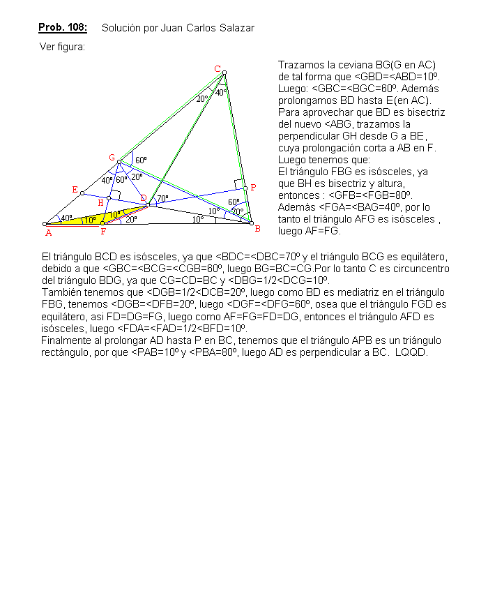

En la figura (ver abajo):
Se tiene ABC con D interior de manera que < ACD=20º, < DCB=40º, < CBD=70º, < DBA =10º.
Demostrar que AD es perpendicular a BC.
Olimpiada Matemática de Canadá 1998
Solución de Juan Carlos Salazar, Profesor de Geometría del Equipo
Olímpico de Venezuela.(Puerto Ordaz)(17 de julio de 2003)
